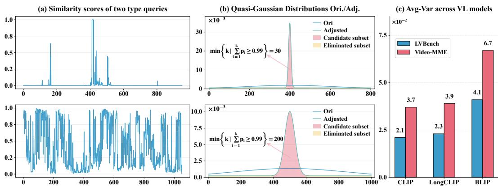

Towards Fast and Effective Long：AdaQ 把 keyframe selection 视作 quasi-Gaussian sampling，根据 query 自适应选择 3-sigma interval
为长视频 MLLM 提供无需训练的帧选择策略，可和视频预训练/评测 pipeline 结合。
Towards Fast and Effective Long Video Understanding of Multimodal Large Language Models via Adaptive Quasi-Gaussian Sampling Kun Zhang, Chenxin Fang, Tao Chen, Baiyang Song, Yunhang Shen, Yiyi Zhou, Rongrong Ji arXiv 新增 / 长视频 MLLM 采样 原文链接
Figureure 2 · : Illustration of the proposed AdaQ approach for the long-video undersFigure 2: Illustration of the proposed AdaQ approach for the long-video understanding of MLLMs. Given a long video and a user query, a pretrained Vision-Language (VL) embedding model is used to compute the frame-query similarities, e.g., CLIP Radford et al. [2021]. Afterwards, AdaQ will transform these similarity scores into a Quasi-Gaussian probability distribution, and adopt the similarity variance, Var(s), to adjust the temperature τ of the Quasi-Gaussian distribution, thereby achieving adaptive 3-σ interval for different frame samplings.这张可视化用来解释 Towards Fast and Effective Long 学到的中间表征或对齐关系。重点看它是否支持正文里的机制判断。

Figureure 1 · : The statistics of keyframe selection and video examplesFigure 1: The statistics of keyframe selection and video examples. (a) Frame-query similarity scores for two types of queries, i.e., the local (top) and global (bottom) ones. (b) The Quasi-Gaussian distributions adjusted by our AdaQ based on the frame-query similarities. Without AdaQ, the default distributions are overly smooth and have excessively large 3-σ intervals. (c) Average similarity variances of LVBench and VideoMME across different embedding models. Different types of video tasks exhibit obvious distinct frame-query similarity variances. Based on this observation, we use the similarity variance to adaptively adjust the 3-σ intervals for more effective frame sampling.这张可视化用来解释 Towards Fast and Effective Long 学到的中间表征或对齐关系。重点看它是否支持正文里的机制判断。